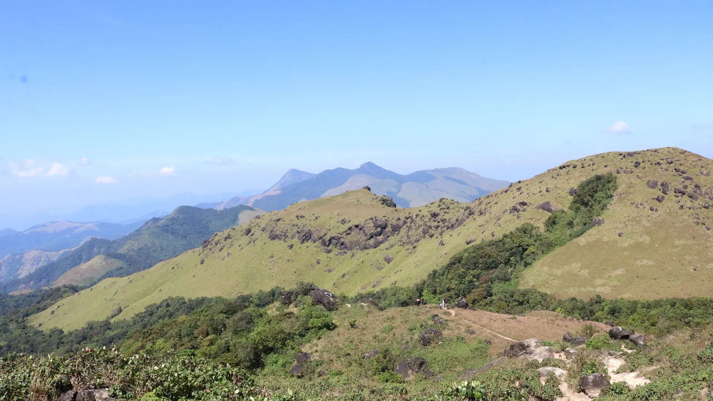

02Day 2 · Nalknad Palacekm 0.1
The king's refuge
~270kmFrom Bangalore · Overnight by road
The walk starts at the Nalknad Palace, about 4 km off the main road below the mountain.

Photo: Vinayaraj, CC BY-SA 4.0ತಡಿಯಾಂಡಮೋಳ್ · Kodagu, Western Ghats
The trek in one line, and what you can do with it.
A day hike in the Western Ghats of Kodagu, booked through the Karnataka forest department.
4 stops on the map, then the climb. Scroll the stops and the map follows.
02Day 2 · Nalknad Palacekm 0.1
~270kmFrom Bangalore · Overnight by road
The walk starts at the Nalknad Palace, about 4 km off the main road below the mountain.
02Day 2 · Forest gate, Karadimottekm 3.5
7:30–11amSlot · The only one
Since December 2016 the forest department has run the trek from an inspection gate at Karadimotte, in Yavakapadi village.
02Day 2 · Tadiandamol · 1,748 mkm 7.0
1,748mHeight · Highest in Kodagu
Near the top the path climbs a steep forest stretch of about 500 m, slippery in the monsoon. Then grass to the summit of Tadiandamol.
02Day 2 · Nalknad Palacekm 13.9
14kmTrek total · There and back
Down the same way to the coffee estates.
Best in Sep–Feb.
Dark: the months the trek’s sources call its best. Mid: possible. See all treks in September.
Base prices from 6 operators’ own pages, per person. GST and travel are often extra. Treqz sells nothing.
₹3,100–4,499
The practical things, then the questions people ask.
Keep a soft copy of your Aadhaar or Voter ID. It is needed for the forest permit.
Plan The UnplannedBikat's group sleeps in a homestay at the base, two or three to a room, with an attached bathroom.
Bikat AdventuresBikat picks up on Friday evening at Malleshwaram, Rajajinagar, Yeshwanthpur and Jalahalli.
Bikat AdventuresYou carry your own bag. Bikat does not include portage of personal rucksacks.
Bikat AdventuresAbout 14.0 km of walking over 3 days on the trail.
The highest point is 1,748 m, about 680 m above the start.
Its sources grade it Easy–moderate.
Sep–Feb. It is also possible in Mar–Apr.
₹3,100 to ₹4,499 per person: base prices from 6 operators' own pages. GST and travel are often extra.